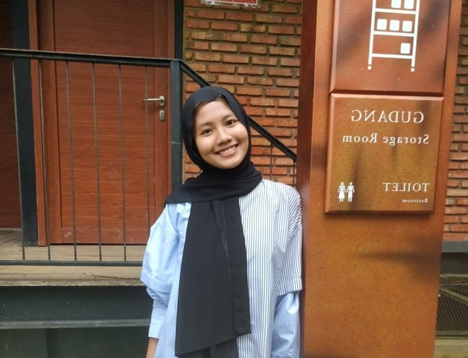
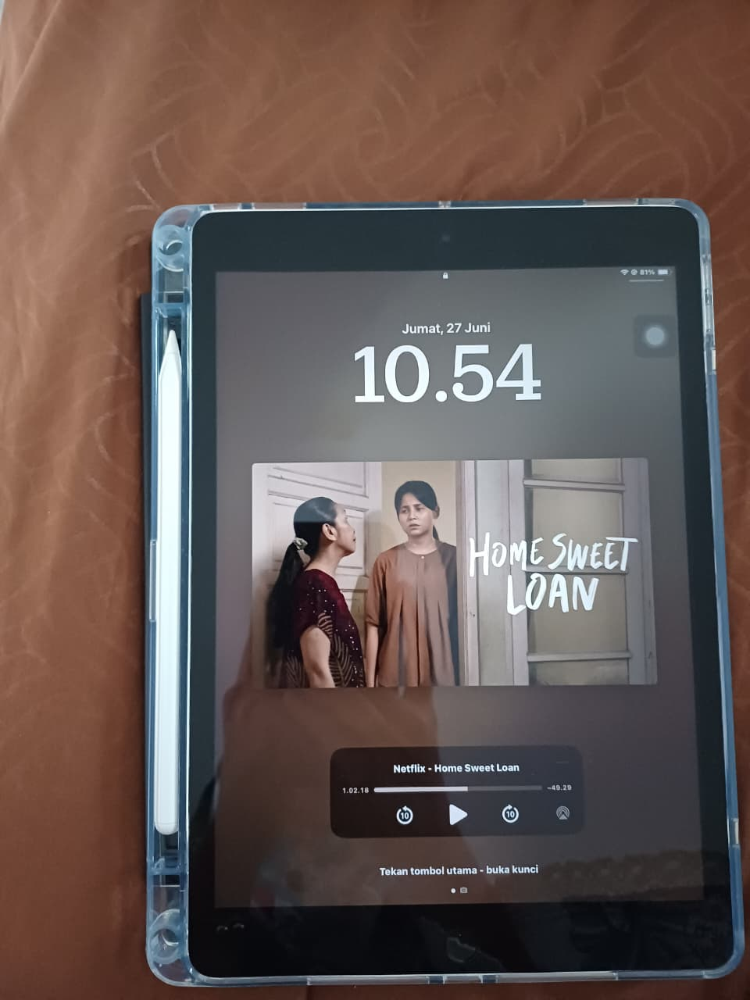
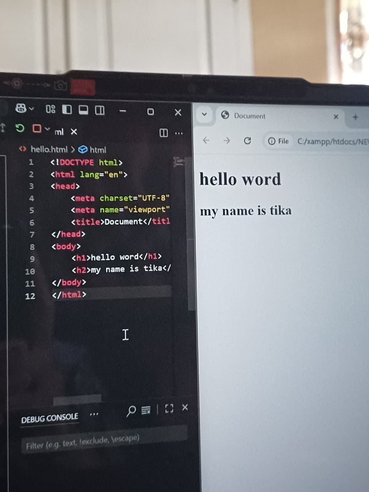
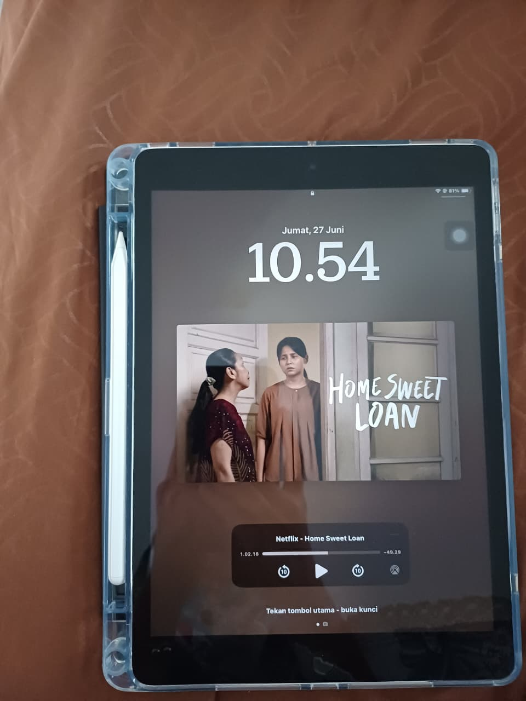
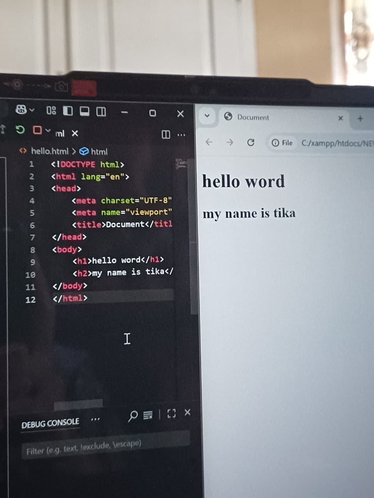

Introduce Myself!
 Hello! My name is Tika, my full name is Nur Rahmatika Kamila Syam. I’m from Muaro Bungo Jambi, and I’m 19 years old. I am a student at the Islamic University in Jambi and my major is Information Systems. My hobbies are traveling, eating, watching movies, and coding (just kidding).
 



If you ask me one question: “What are your activities every day?” I would answer: every afternoon I play badminton with my dad and mom, because we have a yard at home. If you want to play badminton, I think you can come to my house and play with me, and I’ll wait for you! I have liked badminton since elementary school, and I think playing badminton makes my body healthy. That’s why I play it every day, Who knows, one day I’ll be a pro player (xixixi). But guys, I'm also sleeping, scrolling everyday, and then sleeping again wkwk.

By the way, my favorite foods are fried rice, noodle, and meatballs because I think they are delicious. My favorite drinks are iced tea and avocado juice, but I think they are a little bit too sweet. My favorite colors are blue, black, and brown. How about you? what's your favorite color?
I think this is enough. Thank you all, hope your day is great. ee you later!